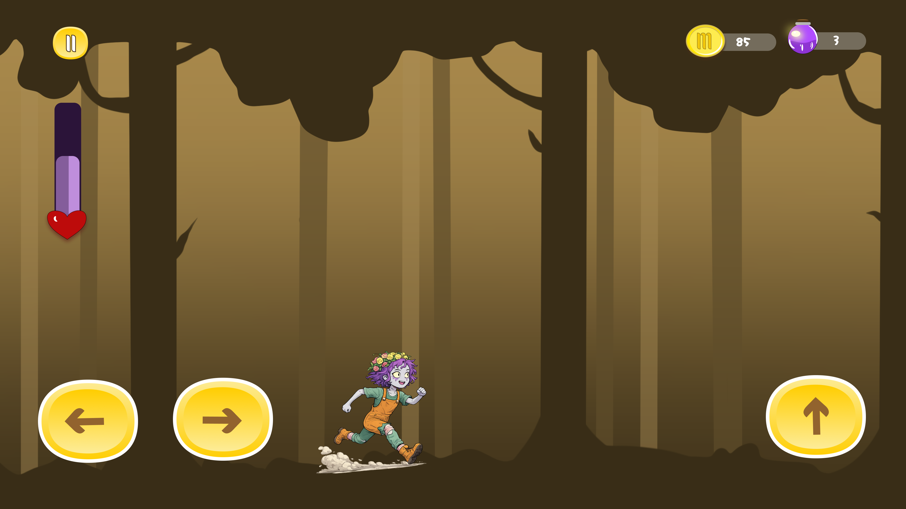
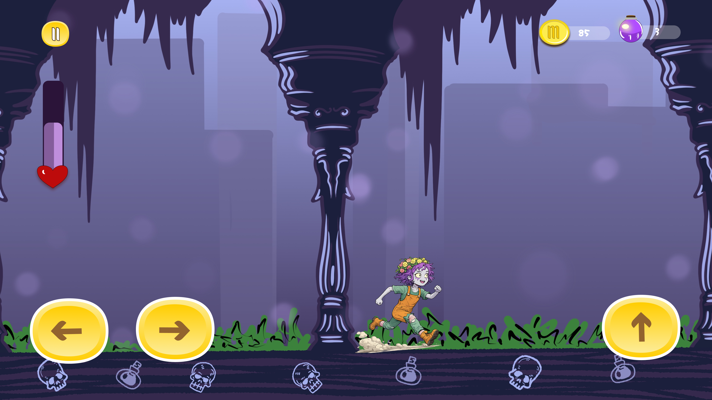

Run to Live – 2D Mobile Game Concept, UI/UX & Art Direction
Game Story
Run to Live is a 2D mobile runner game that tells the story of zombies who have lost their humanity but are striving to regain it. The player controls these characters, driven by a longing for their past, guiding them one step closer to becoming human again.At its core, the game is not just about survival, but about the search for humanity. As the zombie characters continuously run through obstacle-filled levels, exposure to sunlight and contact with toxic water result in damage and death. The player must rely on precise timing and quick reflexes to avoid these dangers and progress.

.png)
The game consists of four main levels, each containing nine stages. With each stage, the characters gradually become more human both physically and emotionally. Visual details, animations, and the overall atmosphere evolve progressively to reflect this transformation. This progression offers not only a sense of mechanical achievement but also narrative satisfaction.Run to Live combines simple control mechanics with an atmospheric narrative and a character-driven transformation story, aiming to provide an accessible experience for casual players while offering meaningful depth for those seeking a richer gameplay experience.


Background visuals were created by me and enhanced with AI support. Character designs were redrawn from scratch in an original style, inspired by AI-generated references.
Level designs were generated through AI prompts and further refined and finalized by me.






 1.png)